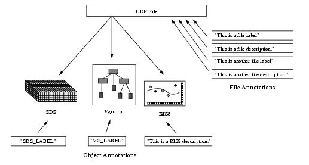
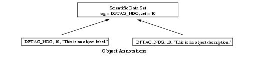

HDF User’s Guide
Version 4.2r4[Top] [Prev][Next]
|
|
HDF User’s GuideVersion 4.2r4 |
[Top] [Prev][Next] |
Chapter 10 -- Annotations (AN API)
10.1 Chapter Overview
The HDF annotation interface, the AN interface, supports the storage of labels and descriptions to HDF files and the data objects they contain. This chapter explains the methods used to read and write file and data object annotations using the AN interface.
Note that the AN interface works with multiple files and supersedes the single-file annotations interface, the DFAN interface, described in Chapter 11, Single-file Annotations (DFAN API). Further note that the AN interface can also read files written by DFAN interface routines.
10.2 The Annotation Data Model
When working with different data types, it is often convenient to identify the contents of a file by adding a short text description or annotation. An annotation serves as the explanation for a file or data object, as in "
COLLECTED 12/14/90" or "BLACK HOLE SIMULATION". The annotation can be as short as a name or as long as a portion of source code. For example, if the data originated as satellite data, the annotation might include the source of the data, pertinent environmental conditions, or other relevant information. In the case of a hypothetical black hole simulation, the annotation might contain source code for the program that produced the data.HDF annotations are designed to accommodate a wide variety of information including titles, comments, variable names, parameters, formulas, and source code. In fact, HDF annotations can encompass any textual information regarding the collection, meaning, or intended use of the data.
Annotations can be attached to files or data objects, and are themselves data objects identifiable by a tag/reference number pair. Refer to Chapter 2, HDF Fundamentals, for a description of tag/reference number pairs.
10.2.1 Labels and Descriptions
Annotations come in two forms: labels and descriptions. Labels are short annotations used for assigning things like titles or time stamps to a file or its data objects. Longer annotations are called descriptions and typically contain more extensive information, such as a source code module or mathematical formulae.
Labels are defined as a null-terminated string of characters. Descriptions may contain any sequence of ASCII characters.
In addition to the distinction made between labels and descriptions, HDF distinguishes between file annotations and object annotations.
10.2.2 File Annotations
File annotations are assigned to a file to describe the origin, meaning, or intended use of its data. Any HDF file can be annotated with a label, description, or combination of both. (See Figure 10a.) The number of labels or descriptions an HDF file may contain is limited to the maximum number of tag/reference number pairs. File annotations may be assigned in any order and at any time after a file is created.
FIGURE 10a File and Object AnnotationsAlthough it is possible to use a file annotation to describe a data object in a file, this practice is not recommended. Each data object should be described by its own data object annotation as it is added to the file.
10.2.3 Object Annotations
Object annotations are assigned to individual data objects to explain their origin, meaning, or intended use. Because object annotations are assigned to individual objects, their use requires an understanding of HDF tags and reference numbers (see Chapter 2, HDF Fundamentals).
The annotation interface takes advantage of this identification scheme by including the object's tag/reference number pair with the text of the annotation. Consider a scientific data set identified by the tag
DFTAG_NDGand the reference number10. (See Figure 10b.) All object annotations assigned to this particular data set must be prefaced with the tagDFTAG_NDGfollowed by the reference number10.FIGURE 10b Object Annotations with Tag/Reference Number Pairs10.2.4 Terminology
The following pairs of terms are used interchangeably in the following discussions: data object annotation and data annotation; data object label and data label; data object description and data description.
10.3 The AN interface
The AN interface permits concurrent operations on a set of annotations that exist in more than one file rather than requiring the program to deal with the annotations on a file-by-file basis.
10.3.1 AN Library Routines
The C routine names of the AN interface are prefaced by the string "AN" and the FORTRAN-77 routine names are prefaced by "af". These routines are divided into the following categories:
The AN routines are listed in Table 10A and are described in more detail in subsequent sections of this chapter.
TABLE 10A AN Library Routines
10.3.2 Type and Tag Definitions Used in the AN Interface
The AN interface uses the four general annotation types used in HDF: the data label, the data description, the file label and the file description. These annotation types correspondingly map to the
AN_DATA_LABEL(or0), theAN_DATA_DESC(or1), theAN_FILE_LABEL(or2) and theAN_FILE_DESC(or3) definitions. Several routines in the AN interface require one of these type definitions to be passed in as an argument to designate the kind of annotation to be created or accessed.10.3.3 Programming Model for the AN Interface
As with the GR and SD interfaces, the programming model for the AN interface allows several files to be open concurrently. The contents of these files can be operated on simultaneously as long as the calling program accurately keeps track of each interface. The file and object identifiers returned by the interface. Each object identifier and file identifier must be explicitly disposed of before the termination of the calling program.
The AN interface writes file labels, file descriptions, data object labels, and data object descriptions according to the following programming model:
To create a file or object annotation, the calling program must contain the following AN routine calls:
C: file_id = Hopen(filename, file_access_mode, num_dds_block);
an_id = ANstart(file_id);
ann_id = ANcreatef(an_id, annot_type);
OR ann_id = ANcreate(an_id, obj_tag, obj_ref, annot_type);
<Optional operations>
status = ANendaccess(ann_id);
status = ANend(an_id);
status = Hclose(file_id);
FORTRAN: file_id = hopen(filename, file_access_mode, num_dds_block)
an_id = afstart(file_id)
ann_id = affcreate(an_id, annot_type)
OR ann_id = afcreate(an_id, obj_tag, obj_ref, annot_type)
<Optional operations>
status = afendaccess(ann_id)
status = afend(an_id)
status = hclose(file_id)
10.3.4 Accessing Files and Annotations: ANstart, ANcreatef, and ANcreate
An HDF file must be opened by Hopen before it can be accessed using the AN interface. Hopen is described in Chapter 2, HDF Fundamentals.
ANstart initializes the AN interface for subsequent AN interface operations. ANstart takes one argument, the file identifier, file_id, returned by Hopen, and returns an AN interface identifier, an_id or
FAIL(or-1) upon unsuccessful completion.ANcreatef creates a file label or file description. It takes two parameters: the AN interface identifier, an_id, returned by ANstart, and the type of the file annotation to be created, annot_type. The parameter annot_type must be set to either
AN_FILE_LABEL(or2) orAN_FILE_DESC(or3). ANcreatef returns the file annotation identifier (ann_id) if successful, andFAIL(or-1) otherwise.ANcreate creates a data label or data description. It takes four parameters: an_id, obj_tag, obj_ref, and annot_type. The parameter an_id is the AN interface identifier, returned by ANstart. The parameters obj_tag and obj_ref are the tag/reference number pair of the object the annotation will be assigned to. The parameter annot_type specifies the type of the data annotation. It must be set to either
AN_DATA_LABEL(or0) orAN_DATA_DESC(or1). The annotation type definitions are defined in the header file "hdf.h".ANcreate returns the data annotation identifier (ann_id) if successful and
FAIL(or-1) otherwise. The parameters of ANcreate, ANcreatef, and ANstart are further defined in Table 10B.10.3.5 Terminating Access to Annotations and Files: ANendaccess and ANend
ANendaccess terminates access to the annotation identified by the parameter ann_id, which is returned by ANcreate or ANcreatef. Any subsequent attempts to access this annotation identifier will result in a value of
FAILbeing returned. One ANendaccess must be called for every ANcreate, ANcreatef, or ANattach. Each ANendaccess returns eitherSUCCEED(or0) orFAIL(or-1).ANend terminates access to the AN interface identified by the parameter an_id, which is returned by ANstart. Any subsequent attempts to access the AN interface identifier or to use AN routines will result in a value of
FAILbeing returned.ANend returns either
SUCCEED(or0) orFAIL(or-1). The parameters of ANendaccess and ANend are defined in Table 10B.The HDF file must be closed by Hclose after all calls to ANend have been properly made. Hclose is described in Chapter 2, HDF Fundamentals.
TABLE 10B ANstart, ANcreate, ANcreatef, ANendaccess and ANend Parameter Lists10.4 Writing an Annotation: ANwriteann
The AN programming model for writing an annotation is as follows:
To write a file or data annotation, the calling program must contain the following routine calls:
C: file_id = Hopen(filename, file_access_mode, num_dds_block);
an_id = ANstart(file_id);
ann_id = ANcreatef(an_id, annot_type);
OR ann_id = ANcreate(an_id, obj_tag, obj_ref, annot_type);
status = ANwriteann(ann_id, ann_text, ann_length);
status = ANendaccess(ann_id);
status = ANend(an_id);
status = Hclose(file_id);
FORTRAN: file_id = hopen(filename, file_access_mode, num_dds_block)
an_id = afstart(file_id)
ann_id = affcreate(an_id, annot_type)
OR ann_id = afcreate(an_id, obj_tag, obj_ref, annot_type)
status = afwriteann(ann_id, ann_text, ann_length)
status = afendaccess(ann_id)
status = afend(an_id)
status = hclose(file_id)
ANwriteann writes the annotation text given in the parameter ann_text to the annotation specified by ann_id. The parameter ann_length specifies the number of characters in the annotation text, not including the
NULLcharacter. If the annotation has already been written with text, ANwriteann will overwrite the current text.ANwriteann returns either
SUCCEED(or0) orFAIL(or-1). The parameters of ANwriteann are further defined in Table 10C.TABLE 10C ANwriteann Parameter ListEXAMPLE 1. Creating File and Data AnnotationsThis example illustrates the use of ANcreatef/affcreate to create file annotations and ANcreate/afcreate to create data annotations.
In this example, the program creates an HDF file named "General_HDFobjects.hdf" then attaches to it two annotations, a file label and a file description. Within the HDF file, the program creates a vgroup named "AN Vgroup" and attaches to it two annotations, a data label and a data description. Refer to Chapter 5, Vgroups (V API), for a discussion of the V interface routines used in this example.
Note that the names
AN_FILE_LABEL,AN_FILE_DESC,AN_DATA_LABEL, andAN_DATA_DESCare defined by the library to specify the type of the annotation to be accessed.C:#include "hdf.h" #define FILE_NAME "General_HDFobjects.hdf" #define VG_NAME "AN Vgroup" #define FILE_LABEL_TXT "General HDF objects" #define FILE_DESC_TXT "This is an HDF file that contains general HDF objects" #define DATA_LABEL_TXT "Common AN Vgroup" #define DATA_DESC_TXT "This is a vgroup that is used to test data annota- tions" main( ) { /************************* Variable declaration **************************/ intn status_n; /* returned status for functions returning an intn */ int32 status_32, /* returned status for functions returning an int32 */ file_id, /* HDF file identifier */ an_id, /* AN interface identifier */ file_label_id, /* file label identifier */ file_desc_id, /* file description identifier */ data_label_id, /* data label identifier */ data_desc_id, /* data description identifier */ vgroup_id; uint16 vgroup_tag, vgroup_ref; /********************** End of variable declaration **********************/ /* * Create the HDF file. */ file_id = Hopen (FILE_NAME, DFACC_CREATE, 0); /* * Initialize the AN interface. */ an_id = ANstart(file_id); /* * Create the file label. */ file_label_id = ANcreatef(an_id, AN_FILE_LABEL); /* * Write the annotations to the file label. */ status_32 = ANwriteann(file_label_id, FILE_LABEL_TXT, strlen (FILE_LABEL_TXT)); /* * Create file description. */ file_desc_id = ANcreatef(an_id, AN_FILE_DESC); /* * Write the annotation to the file description. */ status_32 = ANwriteann(file_desc_id, FILE_DESC_TXT, strlen (FILE_DESC_TXT)); /* * Create a vgroup in the V interface. Note that the vgroup's ref number * is set to -1 for creating and the access mode is "w" for writing. */ status_n = Vstart(file_id); vgroup_id = Vattach(file_id, -1, "w"); status_32 = Vsetname (vgroup_id, VG_NAME); /* * Obtain the tag and ref number of the vgroup for subsequent * references. */ vgroup_tag = (uint16) VQuerytag (vgroup_id); vgroup_ref = (uint16) VQueryref (vgroup_id); /* * Create the data label for the vgroup identified by its tag * and ref number. */ data_label_id = ANcreate(an_id, vgroup_tag, vgroup_ref, AN_DATA_LABEL); /* * Write the annotation text to the data label. */ status_32 = ANwriteann(data_label_id, DATA_LABEL_TXT, strlen(DATA_LABEL_TXT)); /* * Create the data description for the vgroup identified by its tag * and ref number. */ data_desc_id = ANcreate(an_id, vgroup_tag, vgroup_ref, AN_DATA_DESC); /* * Write the annotation text to the data description. */ status_32 = ANwriteann(data_desc_id, DATA_DESC_TXT, strlen(DATA_DESC_TXT)); /* * Teminate access to the vgroup and to the V interface. */ status_32 = Vdetach(vgroup_id); status_n = Vend(file_id); /* * Terminate access to each annotation explicitly. */ status_n = ANendaccess(file_label_id); status_n = ANendaccess(file_desc_id); status_n = ANendaccess(data_label_id); status_n = ANendaccess(data_desc_id); /* * Terminate access to the AN interface and close the HDF file. */ status_32 = ANend(an_id); status_n = Hclose(file_id); }FORTRAN:program create_annotation implicit none C C Parameter declaration C character*22 FILE_NAME character*9 VG_NAME character*19 FILE_LABEL_TXT character*53 FILE_DESC_TXT character*16 DATA_LABEL_TXT character*54 DATA_DESC_TXT C parameter (FILE_NAME = 'General_HDFobjects.hdf', + VG_NAME = 'AN Vgroup', + FILE_LABEL_TXT = 'General HDF objects', + DATA_LABEL_TXT = 'Common AN Vgroup', + FILE_DESC_TXT = + 'This is an HDF file that contains general HDF objects', + DATA_DESC_TXT = + 'This is a vgroup that is used to test data annotations') integer DFACC_CREATE parameter (DFACC_CREATE = 4) integer AN_FILE_LABEL, AN_FILE_DESC, AN_DATA_LABEL, AN_DATA_DESC parameter (AN_FILE_LABEL = 2, + AN_FILE_DESC = 3, + AN_DATA_LABEL = 0, + AN_DATA_DESC = 1) C C Function declaration C integer hopen, hclose integer afstart, affcreate, afwriteann, afcreate, + afendaccess, afend integer vfstart, vfatch, vfsnam, vqref, vqtag, vfdtch, vfend C C**** Variable declaration ******************************************* C integer status integer file_id, an_id integer file_label_id, file_desc_id integer data_label_id, data_desc_id integer vgroup_id, vgroup_tag, vgroup_ref C C**** End of variable declaration ************************************ C C C Create the HDF file. C file_id = hopen(FILE_NAME, DFACC_CREATE, 0) C C Initialize the AN interface. C an_id = afstart(file_id) C C Create the file label. C file_label_id = affcreate(an_id, AN_FILE_LABEL) C C Write the annotation to the file label. C status = afwriteann(file_label_id, FILE_LABEL_TXT, + len(FILE_LABEL_TXT)) C C Create file description. C file_desc_id = affcreate(an_id, AN_FILE_DESC) C C Write the annotation to the file description. C status = afwriteann(file_desc_id, FILE_DESC_TXT, + len(FILE_DESC_TXT)) C C Create a vgroup in the file. Note that the vgroup's ref number is C set to -1 for creating and the access mode is 'w' for writing. C status = vfstart(file_id) vgroup_id = vfatch(file_id, -1, 'w') status = vfsnam(vgroup_id, VG_NAME) C C Obtain the tag and reference number of the vgroup for subsequent C references. C vgroup_ref = vqref(vgroup_id) vgroup_tag = vqtag(vgroup_id) C C Create the data label for the vgroup identified by its tag and ref C number. C data_label_id = afcreate(an_id, vgroup_tag, vgroup_ref, + AN_DATA_LABEL) C C Write the annotation text to the data label. C status = afwriteann(data_label_id, DATA_LABEL_TXT, + len(DATA_LABEL_TXT)) C C Create the data description for the vgroup identified by its tag and ref. C data_desc_id = afcreate(an_id, vgroup_tag, vgroup_ref, + AN_DATA_DESC) C C Write the annotation text to the data description. C status = afwriteann(data_desc_id, DATA_DESC_TXT, + len(DATA_DESC_TXT)) C C Terminate access to the vgroup and to the V interface. C status = vfdtch(vgroup_id) status = vfend(file_id) C C Terminate access to each annotation explicitly. C status = afendaccess(file_label_id) status = afendaccess(file_desc_id) status = afendaccess(data_label_id) status = afendaccess(data_desc_id) C C Terminate access to the AN interface and close the HDF file. C status = afend(an_id) status = hclose(file_id) end10.5 Reading Annotations Using the AN Interface
Reading an annotation is done by first selecting the desired annotation of the appropriate type using ANselect, then reading the annotation text using ANreadann. These two routines are described in this section.
10.5.1 Selecting an Annotation: ANselect
ANselect obtains the identifier of the annotation specified by its index, index, and by its annotation type, annot_type. The syntax for ANselect is as follows:
The parameter index is a nonnegative integer and is less than the total number of annotations of type annot_type in the file. Use ANfileinfo, described in Section 10.6.1 on page 359, to obtain the total number of annotations of type annot_type in the file.
Possible valid values of annot_type are
AN_DATA_LABEL(or0) for a data label,AN_DATA_DESC(or1) for a data description,AN_FILE_LABEL(or2) for a file label, andAN_FILE_DESC(or3) for a file description.ANselect returns an annotation identifier or
FAIL(or-1) upon unsuccessful completion. The parameters of ANselect are further described in Vdata .10.5.2 Reading an Annotation: ANreadann
ANreadann reads the annotation specified by the parameter ann_id and stores the annotation text in the parameter ann_buf. The syntax for ANreadann is as follows
The parameter ann_length specifies the size of the buffer ann_buf. If the length of the file or data label to be read is greater than or equal to ann_length, the label will be truncated to ann_length - 1 characters. If the length of the file or data description is greater than ann_length, the description will be truncated to ann_length characters. The HDF library adds a
NULLcharacter to the retrieved label but not to the description. The user must add aNULLcharacter to the retrieved description if the C library string functions are to operate on this description.ANreadann returns either
SUCCEED(or0) orFAIL(or-1). The parameters of ANreadann are further described in Table 10D.TABLE 10D ANselect and ANreadann Parameter ListsEXAMPLE 2. Reading File and Data AnnotationsThis example illustrates the use of ANfileinfo/affileinfo to get the number of data and file annotations in the file, ANselect/afselect to get an annotation, ANannlen/afannlen to get the length of the annotation, and ANreadann/afreadann to read the contents of the annotation.
In this example, the program reads some of the annotations created in the file "General_HDFobjects.hdf" by Example 1. The program first gets the information on the annotations in the file so that the number of existing annotations of each kind is available prior to reading. The program then gets the length of each annotation and allocates sufficient space for the contents of the annotation to be read. For the simplicity of this example, only the data labels are read. Any other annotations can be read by adding the for loop with appropriate values as noted below.
This example uses the ANfileinfo/affileinfo routine to get annotation information. This rouitne is described in the Section 10.6.1
C:#include "hdf.h" #define FILE_NAME "General_HDFobjects.hdf" main( ) { /************************* Variable declaration **************************/ intn status_n; /* returned status for functions returning an intn */ int32 status_32, /* returned status for functions returning an int32 */ file_id, /* HDF file identifier */ an_id, /* AN interface identifier */ ann_id, /* an annotation identifier */ index, /* position of an annotation in all of the same type*/ ann_length, /* length of the text in an annotation */ n_file_labels, n_file_descs, n_data_labels, n_data_descs; char *ann_buf; /* buffer to hold the read annotation */ /********************** End of variable declaration **********************/ /* * Open the HDF file. */ file_id = Hopen (FILE_NAME, DFACC_READ, 0); /* * Initialize the AN interface. */ an_id = ANstart (file_id); /* * Get the annotation information, e.g., the numbers of file labels, file * descriptions, data labels, and data descriptions. */ status_n = ANfileinfo (an_id, &n_file_labels, &n_file_descs, &n_data_labels, &n_data_descs); /* * Get the data labels. Note that this for loop can be used to * obtain the contents of each kind of annotation with the appropriate * number of annotations and the type of annotation, i.e., replace * n_data_labels with n_file_labels, n_file_descs, or n_data_descs, and * AN_DATA_LABEL with AN_FILE_LABEL, AN_FILE_DESC, or AN_DATA_DESC, * respectively. */ for (index = 0; index < n_data_labels; index++) { /* * Get the identifier of the current data label. */ ann_id = ANselect (an_id, index, AN_DATA_LABEL); /* * Get the length of the data label. */ ann_length = ANannlen (ann_id); /* * Allocate space for the buffer to hold the data label text. */ ann_buf = malloc ((ann_length+1) * sizeof (char)); /* * Read and display the data label. Note that the size of the buffer, * i.e., the third parameter, is 1 character more than the length of * the data label; that is for the null character. It is not the case * when a description is retrieved because the description does not * necessarily end with a null character. * */ status_32 = ANreadann (ann_id, ann_buf, ann_length+1); printf ("Data label index: %d\n", index); printf ("Data label contents: %s\n", ann_buf); /* * Terminate access to the current data label. */ status_n = ANendaccess (ann_id); /* * Free the space allocated for the annotation buffer. */ free (ann_buf); } /* * Terminate access to the AN interface and close the HDF file. */ status_32 = ANend (an_id); status_n = Hclose (file_id); }FORTRAN:program read_annotation implicit none C C Parameter declaration C character*22 FILE_NAME C parameter (FILE_NAME = 'General_HDFobjects.hdf') integer DFACC_READ parameter (DFACC_READ = 1) integer AN_DATA_LABEL parameter (AN_DATA_LABEL = 0) C C Function declaration C integer hopen, hclose integer afstart, affileinfo, afselect, afannlen, afreadann, + afendaccess, afend C C**** Variable declaration ******************************************* C integer status integer file_id, an_id, ann_id integer index, ann_length integer n_file_labels, n_file_descs, n_data_labels, n_data_descs character*256 ann_buf C C**** End of variable declaration ************************************ C C C Open the HDF file for reading. C file_id = hopen(FILE_NAME, DFACC_READ, 0) C C Initialize the AN interface. C an_id = afstart(file_id) C C Get the annotation information, i.e., the number of file labels, C file descriptions, data labels, and data descriptions. C status = affileinfo(an_id, n_file_labels, n_file_descs, + n_data_labels, n_data_descs) C C Get the data labels. Note that this DO loop can be used to obtain C the contents of each kind of annotation with the appropriate number C of annotations and the type of annotation, i.e., replace C n_data_labels with n_file_labels, n_files_descs, or n_data_descs, and C AN_DATA_LABEL with AN_FILE_LABEL, AN_FILE_DESC, or AN_DATA_DESC, C respectively. C do 10 index = 0, n_data_labels-1 C C Get the identifier of the current data label. C ann_id = afselect(an_id, index, AN_DATA_LABEL) C C Get the length of the data label. C ann_length = afannlen(ann_id) C C Read and display the data label. The data label is read into buffer C ann_buf. One has to make sure that ann_buf has sufficient size to hold C the data label. Also note, that the third argument to afreadann is C 1 greater that the actual length of the data label (see comment to C C example). C status = afreadann(ann_id, ann_buf, ann_length+1) write(*,*) 'Data label index: ', index write(*,*) 'Data label contents: ', ann_buf(1:ann_length) 10 continue C C Terminate access to the current data label. C status = afendaccess(ann_id) C C Terminate access to the AN interface and close the HDF file. C status = afend(an_id) status = hclose(file_id) end10.6 Obtaining Annotation Information Using the AN Interface
The HDF library provides various AN routines to obtain annotation information for the purpose of locating either a particular annotation or a set of annotations that correspond to a set of search criteria. The following sections describe these AN routines.
10.6.1 Obtaining the Number of Annotations: ANfileinfo
ANfileinfo retrieves the total number of file labels, file descriptions, data labels, and data descriptions in the file identified by the parameter an_id. The syntax for ANfileinfo is as follows:
The retrieved information will be stored in the parameters n_file_labels, n_file_descs, n_data_labels, and n_data_descs, respectively. They can also be used as loop boundaries.
ANfileinfo returns either
SUCCEED(or0) orFAIL(or-1). The parameters of ANfileinfo are further described in Table 10E.10.6.2 Getting the Length of an Annotation: ANannlen
ANannlen returns either the length of the annotation, identified by the parameter ann_id, or
FAIL(or-1) upon unsuccessful completion. The syntax for ANannlen is as follows:The parameters of ANannlen are further described in Table 10E.
TABLE 10E ANfileinfo and ANannlen Parameter Lists10.6.3 Obtaining the Number of Specifically-typed Annotations of a Data Object: ANnumann
ANnumann returns the total number of annotations that are of type annot_type and that are attached to the object identified by its tag, obj_tag, and reference number, obj_ref. The syntax for ANnumann is as follows:
As this routine is implemented only to obtain the total number of data annotations and not file annotations, the valid values of annot_type are
AN_DATA_LABEL(or0) andAN_DATA_DESC(or1). To obtain the total number of file annotations or all data annotations, use ANfileinfo.ANnumann returns the total number of qualified annotations or
FAIL(or-1). The parameters of ANnumann are further described in Table 10F.10.6.4 Obtaining the List of Specifically-typed Annotation Identifiers of a Data Object: ANannlist
ANannlist retrieves the annotation identifiers for all of the annotations that are of type annot_type and belong to the object identified by its tag, obj_tag, and its reference number, obj_ref. The syntax for ANannlist is as follows:
The identifiers of the retrieved annotations are stored in the parameter ann_list. The routine ANnumann can be used to obtain the number of annotations to be retrieved for dynamic memory allocation.
ANannlist returns either
SUCCEED(or0) orFAIL(or-1). The parameters of ANannlist are further described in Table 10F.TABLE 10F ANnumann and ANannlist Parameter Lists10.6.5 Obtaining the Tag/Reference Number Pair of the Specified
Annotation Index and Type: ANget_tagrefANget_tagref retrieves the tag and reference number of the annotation identified by its index, specified by the parameter index, and by the annotation type, specified by the parameter annot_type. The syntax for ANget_tagref is as follows:
The tag is stored in the parameter ann_tag and the reference number is stored in the parameter ann_ref. The parameter index is a nonnegative value and is less than the total number of annotations of type annot_type in the file. Use ANfileinfo to obtain the total number of annotations of type annot_type in the file.
The value of annot_type can be either
AN_DATA_LABEL(or0),AN_DATA_DESC(or1),AN_FILE_LABEL(or2), orAN_FILE_DESC(or3).ANget_tagref returns either
SUCCEED(or0) orFAIL(or-1). The parameters of ANget_tagref are further described in Table 10G on page 363.10.6.6 Obtaining the Tag/Reference Number Pair from a Specified Annotation Identifier: ANid2tagref
ANid2tagref retrieves the tag/reference number pair of the annotation identified by the parameter ann_id. The syntax for ANid2tagref is as follows:
ANid2tagref stores the retrieved tag and reference number into the parameters ann_tag and ann_ref. Possible values returned in ann_tag are
DFTAG_DIL(or104) for a data label,DFTAG_DIA(or105) for a data description,DFTAG_FID(or100) for a file label, andDFTAG_FD(or101) for a file description.ANid2tagref returns either
SUCCEED(or0) orFAIL(or-1). The parameters of ANid2tagref are further described in Table 10G on page 363.10.6.7 Obtaining the Annotation Identifier from a Specified Tag/Reference Number Pair: ANtagref2id
ANtagref2id routine returns the identifier of the annotation that is specified by its tag/reference number pair or
FAIL(or-1). The syntax for ANtagref2id is as follows:The parameters of ANtagref2id are further described in Table 10G on page 363.
10.6.8 Obtaining an Annotation Tag from a Specified Annotation Type: ANatype2tag
ANatype2tag returns the tag that corresponds to the annotation type specified by the parameter annot_type if successful, or
DFTAG_NULL(or0) otherwise. The syntax for ANatype2tag is as follows:The following table lists the valid values of annot_type in the left column and the corresponding values for the returned annotation tag on the right.
AN_DATA_LABEL(or0)DFTAG_DIL(or104)AN_DATA_DESC(or1)DFTAG_DIA(or105)AN_FILE_LABEL(or2)DFTAG_FID(or100)AN_FILE_DESC(or3)DFTAG_FD(or101)
The parameters of ANatype2tag are further described in Table 10G.
10.6.9 Obtaining an Annotation Type from a Specified Object Tag: ANtag2atype
ANtag2atype returns the annotation type corresponding to the annotation tag ann_tag if successful, or
AN_UNDEF(or-1) otherwise. The syntax for ANtag2atype is as follows:The following table lists the valid values of ann_tag in the left column and the corresponding values of the returned annotation type in the right column.
DFTAG_DIL(or104)AN_DATA_LABEL(or0)DFTAG_DIA(or105)AN_DATA_DESC(or1)DFTAG_FID(or100)AN_FILE_LABEL(or2)DFTAG_FD(or101)AN_FILE_DESC(or3)
The parameters of ANtag2atype are further described in Table 10G.
TABLE 10G ANget_tagref, ANid2tagref, ANtagref2id, ANatype2tag, and ANtag2atype Parameter ListsEXAMPLE 3. Obtaining Annotation InformationThis example illustrates the use of ANnumann/afnumann to obtain the number of annotations of an object, ANannlist/afannlist to obtain the list of annotation identifiers, and ANid2tagref/afidtagref, ANatype2tag/afatypetag, and ANtag2atype/aftagatype to perform some identifier conversions.
In this example, the program locates the vgroup named "AN Vgroup" that was created in the file "General_HDFobjects.hdf" by Example 1. The program then gets the number of data descriptions that this vgroup has and the list of their identifiers. If there are any identifers in the list, the program displays the corresponding reference numbers. Finally, the program makes two simple conversions, from an annotation type to a tag and from a tag to an annotation type, and displays the results.
C:#include "hdf.h" #define FILE_NAME "General_HDFobjects.hdf" #define VG_NAME "AN Vgroup" main( ) { /************************* Variable declaration **************************/ intn status_n; /* returned status for functions returning an intn */ int32 status_32, /* returned status for functions returning an int32*/ file_id, an_id, ann_id, n_annots, /* number of annotations */ *ann_list, /* list of annotation identifiers */ vgroup_ref, /* reference number of the vgroup */ index; /* index of an annotation in the annotation list */ ann_type annot_type = AN_DATA_DESC; /* annotation to be obtained*/ uint16 ann_tag, ann_ref, /* tag/ref number of an annotation */ vgroup_tag = DFTAG_VG; /* tag of the vgroup */ /********************** End of variable declaration **********************/ /* * Create the HDF file. */ file_id = Hopen (FILE_NAME, DFACC_READ, 0); /* * Initialize the V interface. */ status_n = Vstart (file_id); /* * Get the vgroup named VG_NAME. */ vgroup_ref = Vfind (file_id, VG_NAME); /* * Initialize the AN interface and obtain an interface id. */ an_id = ANstart (file_id); /* * Get the number of object descriptions. Note that, since ANnumann takes * the tag and reference number as being of type unit16, vgroup_ref must be * safely cast to uint16 by checking for FAIL value first. */ if (vgroup_ref != FAIL) { n_annots = ANnumann (an_id, annot_type, vgroup_tag, (uint16)vgroup_ref); /* * Allocate space to hold the annotation identifiers. */ ann_list = malloc (n_annots * sizeof (int32)); /* * Get the list of identifiers of the annotations attached to the * vgroup and of type annot_type. */ n_annots = ANannlist (an_id, annot_type, vgroup_tag, (uint16)vgroup_ref, ann_list); /* * Get each annotation identifier from the list then display the * tag/ref number pair of the corresponding annotation. */ printf ("List of annotations of type AN_DATA_DESC:\n"); for (index = 0; index < n_annots; index++) { /* * Get and display the ref number of the annotation from * its identifier. */ status_32 = ANid2tagref (ann_list[index], &ann_tag, &ann_ref); printf ("Annotation index %d: tag = %s\nreference number= %d\n", index, ann_tag == DFTAG_DIA ? "DFTAG_DIA (data description)": "Incorrect", ann_ref); } /* for */ } /* for */ /* * Get and display an annotation type from an annotation tag. */ annot_type = ANtag2atype (DFTAG_FID); printf ("\nAnnotation type of DFTAG_FID (file label) is %s\n", annot_type == AN_FILE_LABEL ? "AN_FILE_LABEL":"Incorrect"); /* * Get and display an annotation tag from an annotation type. */ ann_tag = ANatype2tag (AN_DATA_LABEL); printf ("\nAnnotation tag of AN_DATA_LABEL is %s\n", ann_tag == DFTAG_DIL ? "DFTAG_DIL (data label)":"Incorrect"); /* * Terminate access to the AN interface and close the HDF file. */ status_32 = ANend (an_id); status_n = Hclose (file_id); /* * Free the space allocated for the annotation identifier list. */ free (ann_list); }FORTRAN:program annotation_info implicit none C C Parameter declaration C character*22 FILE_NAME character*9 VG_NAME C parameter (FILE_NAME = 'General_HDFobjects.hdf', + VG_NAME = 'AN Vgroup') integer DFACC_READ parameter (DFACC_READ = 1) integer AN_FILE_LABEL, AN_DATA_LABEL, AN_DATA_DESC parameter (AN_FILE_LABEL = 2, + AN_DATA_LABEL = 0, + AN_DATA_DESC = 1) integer DFTAG_DIA, DFTAG_FID, DFTAG_DIL parameter (DFTAG_DIA = 105, + DFTAG_FID = 100, + DFTAG_DIL = 104) integer DFTAG_VG parameter (DFTAG_VG = 1965) C C Function declaration C integer hopen, hclose integer afstart, afnumann, afannlist, afidtagref, aftagatype, + afatypetag, afend integer vfstart, vfind C C**** Variable declaration ******************************************* C integer status integer file_id, an_id integer n_annots, ann_index, annot_type, ann_tag, ann_ref integer ann_list(10) integer vgroup_tag, vgroup_ref C C**** End of variable declaration ************************************ C annot_type = AN_DATA_DESC vgroup_tag = DFTAG_VG C C Open the HDF file for reading. C file_id = hopen(FILE_NAME, DFACC_READ, 0) C C Initialize the V interface. C status = vfstart(file_id) C C Get the group named VG_NAME. C vgroup_ref = vfind(file_id, VG_NAME) C C Initialize the AN interface. C an_id = afstart(file_id) C C Get the number of object descriptions. C if (vgroup_ref .eq. -1) goto 100 n_annots = afnumann(an_id, annot_type, vgroup_tag, vgroup_ref) C C Get the list of identifiers of the annotations attached to the C vgroup and of type annot_type. Identifiers are read into ann_list C buffer. One has to make sure that ann_list has the size big enough C to hold the list of identifiers. C n_annots = afannlist(an_id, annot_type, vgroup_tag, vgroup_ref, + ann_list) C C Get each annotation identifier from the list then display the C tag/ref number pair of the corresponding annotation. C write(*,*) 'List of annotations of type AN_DATA_DESC' do 10 ann_index = 0, n_annots - 1 C C Get and display the ref number of the annotation from its C identifier. C status = afidtagref(ann_list(ann_index+1), ann_tag, ann_ref) write(*,*) 'Annotation index: ', ann_index if (ann_tag .eq. DFTAG_DIA) then write(*,*) 'tag = DFTAG_DIA (data description)' else write(*,*) ' tag = Incorrect' endif write(*,*) 'reference number = ', ann_ref 10 continue C C Get and display an annotation type from an annotation tag. C annot_type = aftagatype(DFTAG_FID) if (annot_type .eq. AN_FILE_LABEL) then write(*,*) 'Annotation type of DFTAG_FID (file label) is ', + 'AN_FILE_LABEL ' else write(*,*) 'Annotation type of DFTAG_FID (file label) is ', + 'Incorrect' endif C C Get and display an annotation tag from an annotation type. C ann_tag = afatypetag(AN_DATA_LABEL) if (ann_tag .eq. DFTAG_DIL ) then write(*,*) 'Annotation tag of AN_DATA_LABEL is ', + 'DFTAG_DIL (data label)' else write(*,*) 'Annotation type of DFTAG_FID (file label) is ', + 'Incorrect' endif C C Terminate access to the AN interface and close the HDF file. C 100 continue status = afend(an_id) status = hclose(file_id) end
|
HDF4.2r4 - February 2009 Copyright |
The HDF Group www.hdfgroup.org |